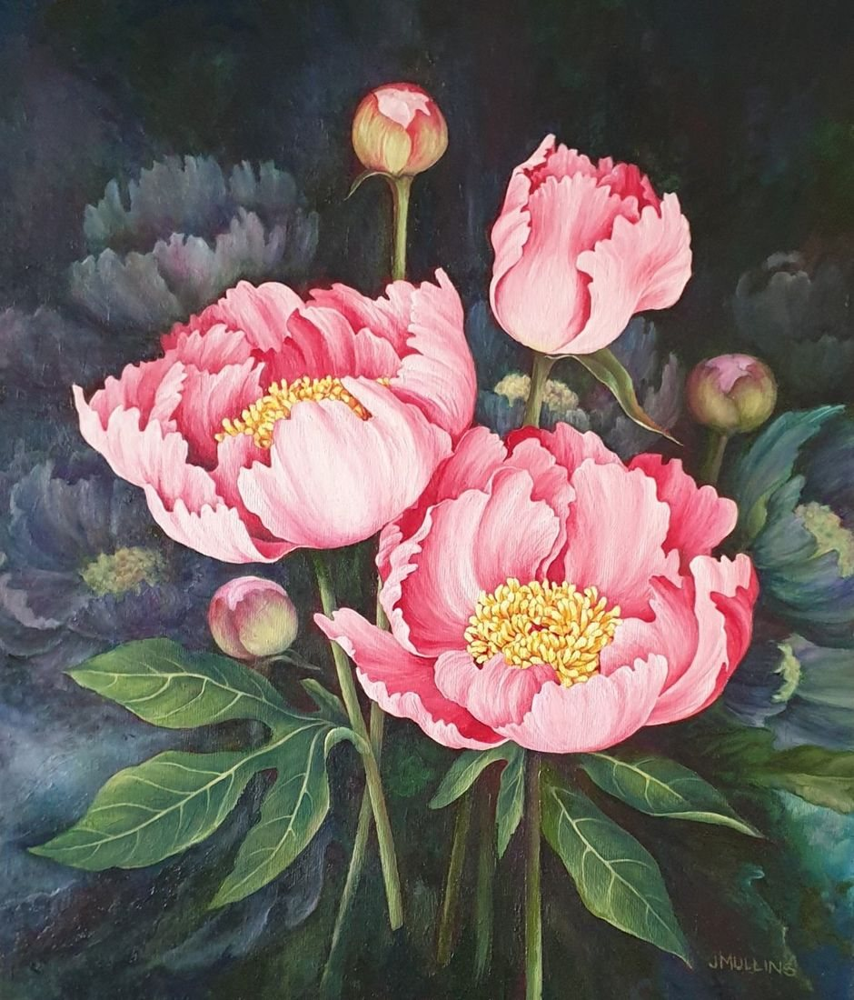
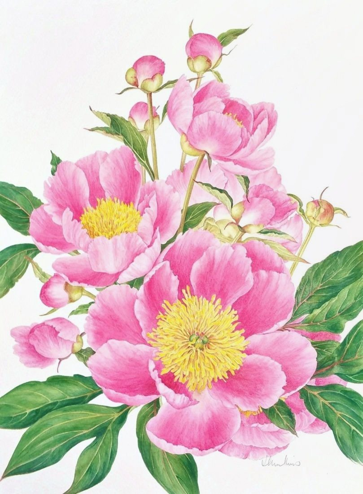
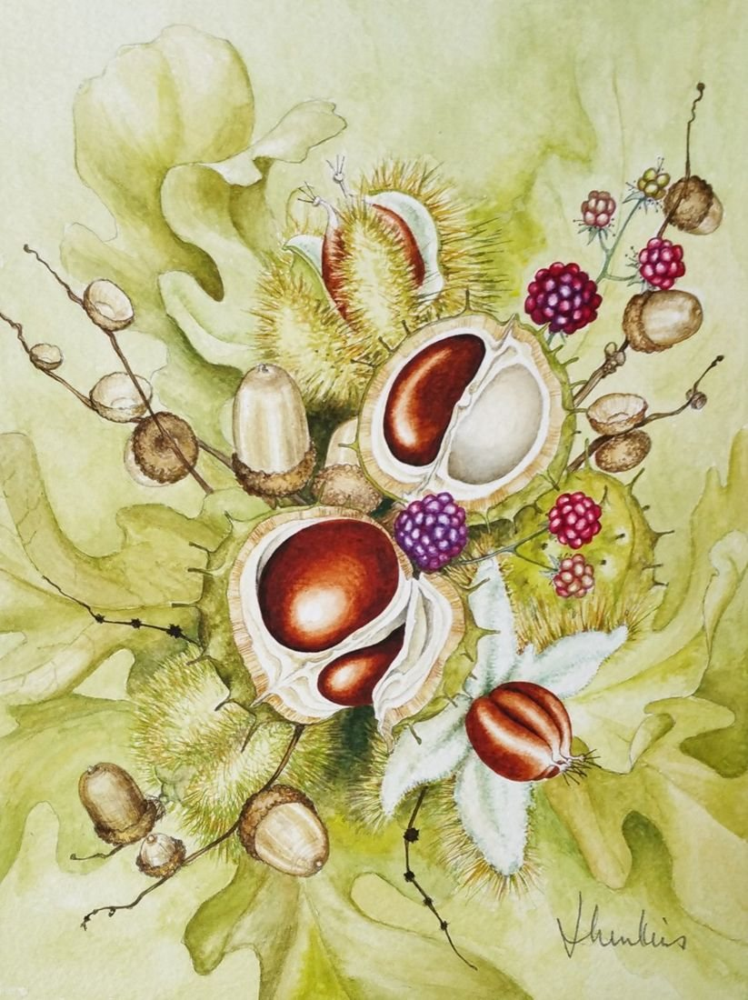
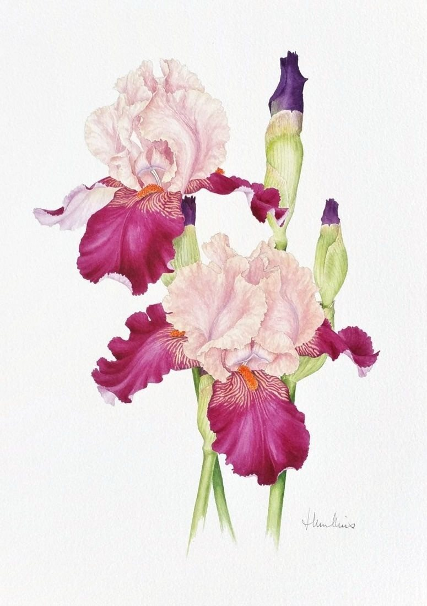
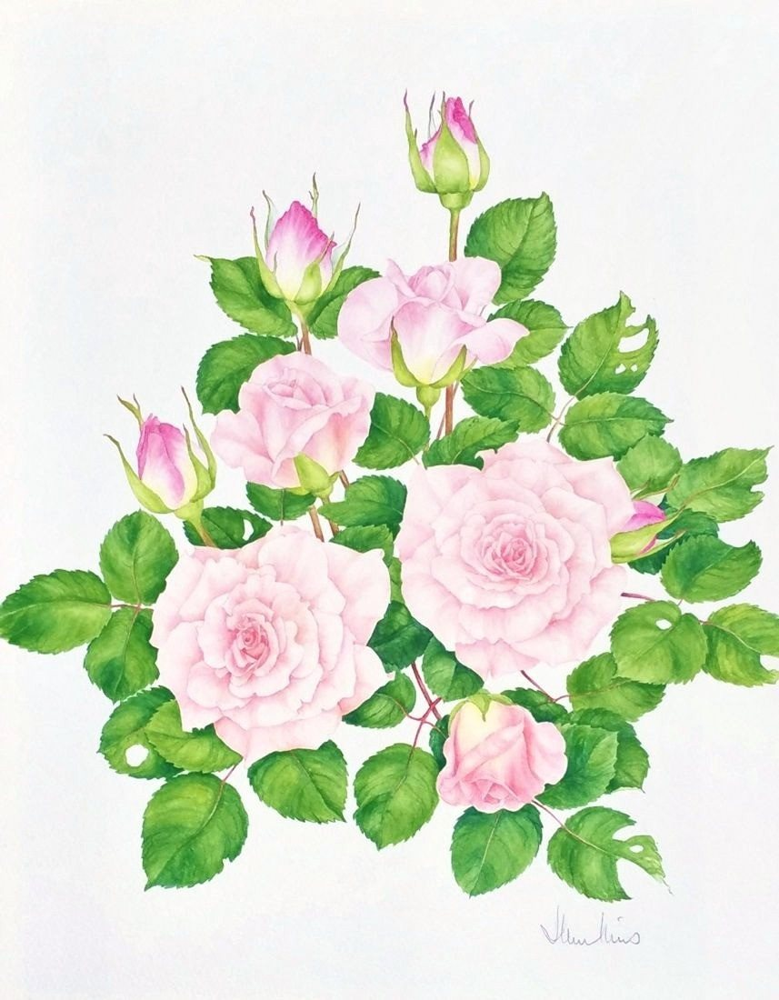
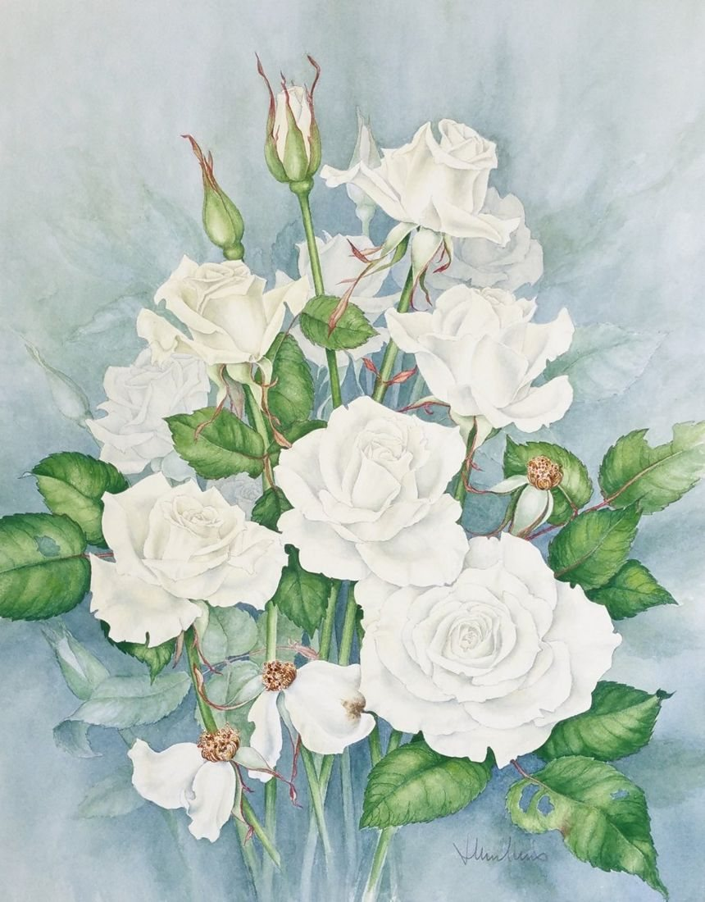

Zantedeschia
No. 35- Medium
- Watercolour on paper
- Size
- 47 × 30 cm
- Year
- 1990s
- Price
- £190
I grew this plant without realizing just how unusual the flowers were. I painted them here in various stages of opening.
Flowers and plants painted from life, with close attention to their structure. About 1980 to 2000
I grew this plant without realizing just how unusual the flowers were. I painted them here in various stages of opening.

I grew those beautiful flowers and often painted them, although this is the only one in oil. I became interested in creating a background which adds depth to the painting.

Of the many different irises I grew, these brown ones were the most difficult to paint, as the spots of brown seem endless!

One of several watercolour studies I did of these beautiful flowers, which were growing in my garden.

These large flowers are beautiful in their colouring and complexity. They were painted from life and are life-sized.

I love the variety of seeds and leaf colour one gets in autumn, and have done several arrangements with conkers and chestnuts. This one was painted in watercolour, with again attention to detail.

Two more of the large bearded irises in my garden. They were painted from life and are life-size.


